GH-PM25: daily 1-km fine particulate matter for Ghana
Data sources, sensor harmonisation, a hybrid machine-learning–geostatistical downscaling algorithm, uncertainty quantification, validation, and the operational monitoring system.
- Product
- GH-PM25 v1.0.0
- Variable
- 24-h mean PM2.5, µg m⁻³
- Grid
- 0.01° WGS84 (≈1.1 km), 650 × 455
- Extent
- 3.30°W–1.25°E, 4.70–11.20°N
- Training record
- 2024-08-01 → 2026-09-10
- Training data
- 33,097 station-days, 187 sites
- Latency
- D+1 forecast · D0 nowcast · D−7 final
- Uncertainty
- 90% conformal interval per cell
- Spatial CV R² / RMSE
- 0.75 / 5.3 µg m⁻³
- Formats
- NetCDF-4 CF-1.8, GeoTIFF, CSV, web
Executive summary
GH-PM25 is a daily map of fine particulate matter (PM2.5) for all of Ghana at about 1 km resolution. It runs automatically each day and has a public web portal. The product combines ground measurements with atmospheric-composition modelling, reanalysis weather, satellite fire detections and detailed land-surface information. Every modelling choice (hyperparameters, ensemble composition, strength of geostatistical correction) was selected under spatial cross-validation rather than random cross-validation. Each pixel carries a distribution-free prediction interval.
Key findings
- Training data. 33,097 daily observations from 187 monitors (84 in Ghana, 18,395 station-days) were quality-controlled and harmonised to US State Department BAM-1020 reference monitors.
- Accuracy in unseen cities. Predicting whole cities the model never saw (leave-city-cluster-out cross-validation), GH-PM25 reaches R² = 0.75, RMSE = 5.3 µg m⁻³ and MAE = 3.4 µg m⁻³. For Ghanaian stations: R² = 0.69, RMSE = 4.1 µg m⁻³.
- Improvement over the global model. The raw CAMS global model scores R² = 0.06 (RMSE = 10.2 µg m⁻³); GH-PM25 cuts RMSE by 48%. A gradient-boosting model with the aerosol-optical-depth, meteorology and day-of-year inputs typical of earlier work reaches R² = 0.64 under the same test.
- Optimistic random CV. Random 10-fold cross-validation, the design behind many headline numbers in the literature, gives R² = 0.92. The gap to the spatial score shows why spatial validation is needed.
- Uncertainty. The 90% prediction intervals cover 90.1% of held-out observations in unseen cities.
- Record length. 769 daily maps have been produced so far.
In Accra, over 517 matched days, GH-PM25 reached r = 0.96 and RMSE = 2.5 µg/m³ out-of-sample, compared with r = 0.81 and RMSE = 8.2 µg/m³ for the Anand et al. (2026) product.
1Background and objectives
Ambient PM2.5 is the leading environmental health risk in West Africa. Ghana's air-quality problem has two parts. In the south, rapidly growing cities (Greater Accra, Kumasi, Sekondi-Takoradi) add traffic, waste burning, industry and domestic biomass fuels. Nationwide, the Harmattan (roughly December–February) brings Saharan mineral dust and smoke from savanna burning. In Accra, measured PM2.5 during the Harmattan has averaged about 90 µg m⁻³, against about 22 µg m⁻³ outside it (Alli et al., 2021; 2023). The WHO 2021 guideline for 24-hour PM2.5 is 15 µg m⁻³, and Ghana EPA's national 24-hour standard (GS 1236:2019) is 35 µg m⁻³.
Regulatory monitoring is sparse. Until early 2025 the only continuous reference-grade monitor with open data was the US Embassy BAM-1020 in Accra. Low-cost sensor networks have since grown fast: Breathe Accra (Clarity) from 2024, AirGradient deployments by the University of Ghana, Afri-SET and Ghana EPA, and a national Clarity network in regional capitals from 2026. Without calibration and a spatial model, these networks describe only where sensors happen to be.
The most recent km-scale product for Ghana (Anand et al., 2026) was trained with XGBoost on MAIAC AOD, OMI/TROPOMI trace gases, ERA5-Land and MERRA-2. It reports R² = 0.72 under random cross-validation, falling to 0.49–0.57 when leaving out locations. Its hyperparameters were tuned on random folds, it gives no pixel-level uncertainty, and it uses no land-use, population, road or fire information. GH-PM25 was designed to close these gaps:
- Harmonise low-cost sensors to reference-grade monitors before training, with network-specific corrections chosen by cross-validation and guarded against extrapolation.
- Use predictors that carry real kilometre-scale information (built-up area, population, night-time lights, roads, terrain) and physically meaningful dynamic information: ventilation, dust fraction, and upwind fire radiative power.
- Train on a regional West African network, so dust and smoke regimes rare in Ghana's coastal cities are represented.
- Combine heterogeneous learners into a robust ensemble, and test whether same-day residual kriging adds skill before using it.
- Give every pixel a calibrated prediction interval and an area-of-applicability flag.
- Evaluate with validation designs that stop information leaking from nearby monitors, and tune and select models under those designs only.
- Run operationally with open, keyless data services: nowcast, one-day forecast and weekly final reprocessing, published to an interactive portal.
2Domain and product design
The mapping grid is a regular 0.01° latitude–longitude lattice (≈1.11 km at the equator) covering Ghana from 3.30°W to 1.25°E and 4.70°N to 11.20°N. It has 650 rows and 455 columns; cells whose centres fall inside the geoBoundaries national outline are mapped. The day is 00–24 UTC, which is also Ghana's local time. Model training uses a wider regional domain (9°W–9°E, 4–13.5°N) that includes monitors in Côte d'Ivoire, Togo, Burkina Faso, Mali and Nigeria. The training record starts on 2024-08-01, the first day of CAMS global composition fields in the archive used.
3Data
3.1Ground monitors
Ground data come from two keyless archives:
- OpenAQ public archive (
s3://openaq-data-archive, one gzip CSV per location per day) for low-cost networks and the State Department monitors it redistributes. - AirNow "EmbassyHistorical" files (
files.airnowtech.org) for the Lomé and Ouagadougou reference monitors, and to fill gaps at Accra and Abidjan.
No OpenAQ location metadata dump exists, so Ghanaian and regional location IDs were found by listing every location prefix in the archive (55,567 locations), reading coordinates from each location's first file, and pulling operator details from the public explorer pages.
Hourly quality control:
- physical range 0 < PM2.5 ≤ 1000 µg m⁻³, and conversion of sub-hourly records to hourly means;
- removal of stuck sensors (≥ 6 identical consecutive hours);
- a Hampel spike filter (|x − 25-h rolling median| > max(6 × 1.4826 × MAD, 30 µg m⁻³)).
A daily mean is kept only with at least 12 valid hours and at least 2 hours in each 6-hour block, so the diurnal cycle is represented. One network (Aurassure, Nigeria) was excluded after screening because its daily values were physically implausible.
| Country | Network / operator | Grade | Sites | Station-days | From | To | Mean raw | Mean calibrated |
|---|---|---|---|---|---|---|---|---|
| BF | Aurassure | Low-cost optical | 1 | 99 | 2026-04 | 2026-09 | 11.7 | 40.6 |
| BF | US Embassy (AirNow) | Reference BAM-1020 | 1 | 57 | 2024-08 | 2025-03 | 39.0 | 39.0 |
| CI | Data354 | Low-cost optical | 21 | 4,910 | 2024-08 | 2026-09 | 8.7 | 18.7 |
| CI | Clarity | Low-cost optical | 10 | 1,371 | 2026-01 | 2026-09 | 18.8 | 27.0 |
| CI | StateAir Abidjan | Reference BAM-1020 | 1 | 209 | 2024-09 | 2025-04 | 25.2 | 25.2 |
| CI | AirGradient | Low-cost optical | 1 | 23 | 2026-05 | 2026-08 | 14.4 | 14.8 |
| GH | Clarity | Low-cost optical | 68 | 13,348 | 2024-08 | 2026-09 | 22.0 | 17.9 |
| GH | AirGradient | Low-cost optical | 14 | 4,866 | 2024-08 | 2026-09 | 24.9 | 19.2 |
| GH | StateAir Accra | Reference BAM-1020 | 1 | 155 | 2024-08 | 2026-05 | 21.5 | 21.5 |
| GH | Unknown | Low-cost optical | 1 | 26 | 2025-10 | 2025-11 | 32.9 | 28.1 |
| NG | AirGradient | Low-cost optical | 39 | 5,635 | 2025-02 | 2026-09 | 30.4 | 24.9 |
| NG | IQAir | Low-cost optical | 3 | 1,101 | 2025-08 | 2026-09 | 27.7 | 23.5 |
| NG | Clarity | Low-cost optical | 1 | 501 | 2024-08 | 2026-05 | 23.1 | 21.5 |
| NG | Miri Africa | Low-cost optical | 9 | 303 | 2026-03 | 2026-04 | 13.3 | 19.7 |
| NG | AirNow | Reference BAM-1020 | 2 | 276 | 2024-08 | 2025-03 | 31.7 | 31.7 |
| NG | AirQo | Low-cost optical | 13 | 123 | 2026-05 | 2026-09 | 31.1 | 22.4 |
| TG | US Embassy (AirNow) | Reference BAM-1020 | 1 | 94 | 2024-11 | 2025-03 | 54.9 | 54.9 |
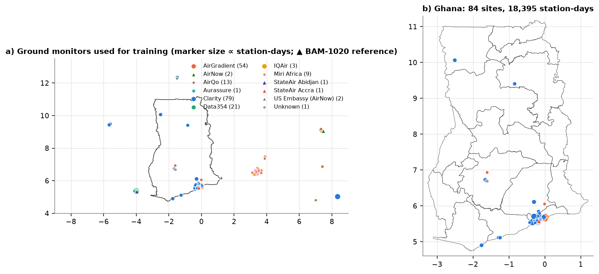
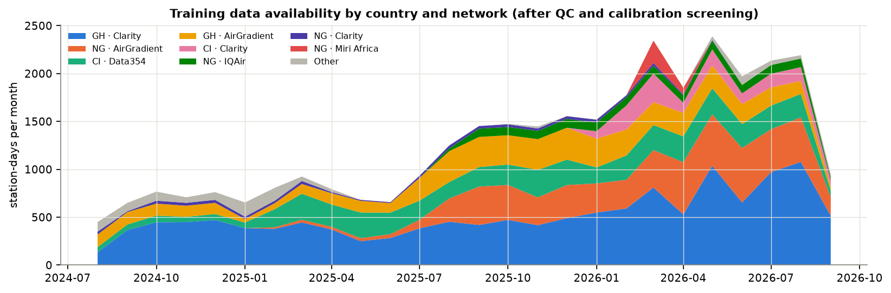
3.2Low-cost sensor harmonisation
Optical sensors over-read at high humidity (hygroscopic growth) and under-read coarse dust, and the size of these errors varies by manufacturer. Each low-cost site within 10 km of a BAM-1020 was paired with the reference daily mean for the same day. For each network, three corrections were compared by month-blocked cross-validation:
- identity (no correction);
- a constant multiplicative ratio;
- a robust (Huber) log-linear model:
RH is MERRA-2 relative humidity at the sensor, so any sensor can be corrected even without an on-board humidity channel. Humidity is clamped to the range seen in co-location. This matters because coastal Accra rarely has the very dry Harmattan air found inland, and an unconstrained humidity term produced implausible corrections in early tests.
Correction models are applied hierarchically: network first, then sensor family, then all low-cost sensors pooled. Each observation carries its calibration uncertainty \( \sigma_{\mathrm{cal}} \) forward into the training weights. Networks whose calibrated cross-validated R² stays below 0.30 are excluded.
| Network | Pairs | Sensors | Mean dist. km | RH range % | Max ref. | Selected model | R² raw | R² cal. | MAE raw | MAE cal. | Bias raw | Bias cal. | Excluded |
|---|---|---|---|---|---|---|---|---|---|---|---|---|---|
| CI · Data354 | 1,456 | 13 | 4.3 | 60-93 | 110 | loglinear | -0.45 | 0.37 | 13.2 | 8.6 | -12.4 | -1.6 | no |
| GH · AirGradient | 921 | 4 | 8.4 | 63-94 | 99 | loglinear | 0.40 | 0.67 | 6.1 | 3.1 | 4.8 | -0.7 | no |
| GH · Clarity | 1,173 | 34 | 5.0 | 67-94 | 62 | loglinear | -0.28 | 0.56 | 8.3 | 5.3 | 5.9 | -0.6 | no |
| GH · Clarity (legacy 2022-23) | 276 | 2 | 8.1 | 62-93 | 258 | loglinear | 0.21 | 0.50 | 18.5 | 14.8 | -16.7 | -6.5 | no |
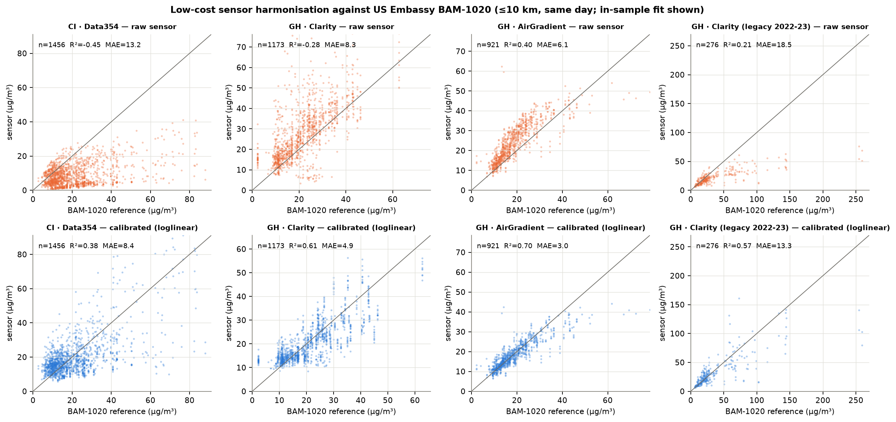
3.3Atmospheric composition and meteorology
CAMS global composition. The ECMWF CAMS global analyses and forecasts (IFS-COMPO, 0.4°, 3-hourly) assimilate MODIS and VIIRS aerosol optical depth and supply surface PM2.5, PM10, dust, AOD 550 nm, CO and NO₂. They were retrieved through the Open-Meteo air-quality API at 126 lattice nodes (0.8° spacing aligned to the native grid, plus the nodes surrounding every out-of-country station) and averaged to daily means. The free service limits request volume, so downloads are paced with a token bucket.
MERRA-2 weather and aerosol. Meteorology and aerosol come from NASA POWER (MERRA-2, with GEOS FP-IT for recent days; 0.5° × 0.625°):
- near-surface temperature, humidity and dew point;
- precipitation (IMERG-corrected);
- 10-m winds and surface pressure;
- downward shortwave radiation and cloud fraction;
- MERRA-2 total AOD;
- the pressure at the top of the planetary boundary layer, converted to a depth with the hypsometric relation \( h \approx H \ln(p_s/p_{\mathrm{PBL}}) \), H = 8.4 km.
Forecast and nowcast days. For days not yet in POWER, ECMWF IFS 0.25° forecasts are used. They are mapped to MERRA-2 by per-node linear regression over the most recent 45 overlapping days, which removes the systematic difference between the two models.
3.4Fires
Biomass burning is a major PM2.5 source in the savanna belt, yet the baseline product did not use fire data. GH-PM25 uses a single-sensor record from Suomi-NPP VIIRS at 375 m, giving 3,221,152 quality-screened detections:
- 2022–2024: NASA FIRMS yearly country archives (VNP14IMG);
- From 2025: the NOAA Enterprise VIIRS I-band fire EDR (EFIRE v1r3), published keyless on the NOAA Open Data Dissemination bucket with about 1–2 h latency. The legacy AF-Iband EDR ends in February 2025.
Detections with nominal or high confidence, no persistent-anomaly flag (gas flares, industry) and valid FRP are kept.
A full day of EFIRE holds about 1,000 granules, so GH-PM25 selects granules with a simple sun-synchronous orbit model:
- about a dozen probe granules each day give nadir position and pass direction from their embedded geolocation grid;
- these yield the ascending-node time and longitude, \( \phi(t)=\arcsin(\sin i\,\sin u),\ u=2\pi(t-t_\Omega)/P \);
- only granules whose nadir track passes within one swath of West Africa are read.
A first approach based on 16-day repeat-cycle templates failed because of along-track timing drift, which is why the orbit model is used. Across 10 independent QA days the selection read on average 33 of 589 candidate granules and captured 100.0%–100.0% of fire radiative power. On 13 overlapping days in late 2024 the median EFIRE/FIRMS ratio was 1.009 for FRP and 1.006 for detection counts.
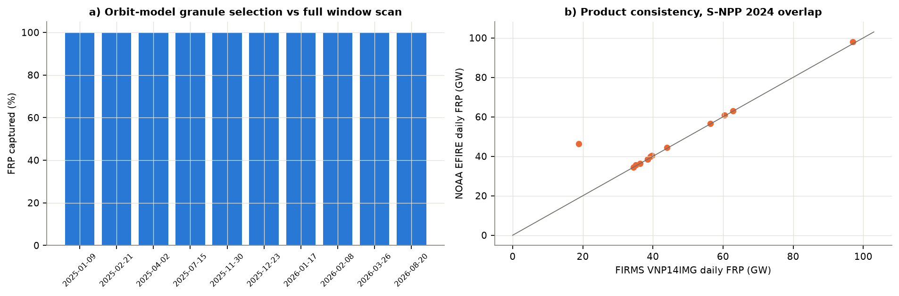
3.5Static 1-km covariates
Kilometre-scale spatial structure comes from:
- ESA WorldCover 2021 (10 m): land-cover class fractions.
- Copernicus DEM GLO-90: mean elevation, sub-grid roughness, and elevation relative to the surrounding 10 km.
- WorldPop R2025A 2024: constrained, UN-adjusted population density.
- VIIRS DNB monthly composites (World Bank "Light Every Night"): median night-time radiance over November–February.
- OpenStreetMap (motorway to secondary roads): major-road density and distance to the nearest major road.
- Natural Earth: distance to the coast.
Cloud-optimised GeoTIFFs are read in windows over HTTP and aggregated to the 0.01° lattice. Urban layers also get 3-km and 10-km Gaussian neighbourhood versions that represent upwind and area-source influence.
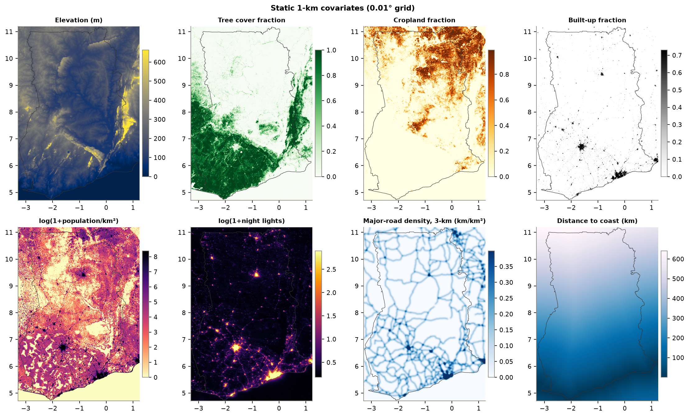
3.6Data provenance
| Dataset | Provider | Resolution | Access point | Latency | Role |
|---|---|---|---|---|---|
| OpenAQ archive | OpenAQ; operators Clarity, AirGradient, Data354, IQAir… | point, ≤hourly | openaq-data-archive.s3.amazonaws.com | 1–3 d | target (calibrated) |
| BAM-1020 embassy monitors | US Department of State / AirNow | point, hourly | files.airnowtech.org/airnow/EmbassyHistorical | 1 d (Accra feed halted Mar 2025) | reference, calibration |
| CAMS global composition | ECMWF / Copernicus | 0.4°, 3-hourly | air-quality-api.open-meteo.com | forecast | predictors |
| MERRA-2 / GEOS FP-IT | NASA GMAO via NASA POWER | 0.5° × 0.625°, daily | power.larc.nasa.gov/api/temporal/daily/regional | 1–3 d | predictors |
| ECMWF IFS 0.25° | ECMWF via Open-Meteo | 0.25°, hourly | api.open-meteo.com/v1/forecast | forecast | nowcast/forecast met |
| VIIRS 375 m fires | NASA FIRMS; NOAA NESDIS EFIRE | 375 m | firms.modaps.eosdis.nasa.gov/data/country; noaa-nesdis-snpp-pds | ~2 h | fire predictors |
| ESA WorldCover v200 | ESA | 10 m | esa-worldcover.s3.eu-central-1.amazonaws.com | static | land cover |
| Copernicus DEM GLO-90 | ESA / Airbus | 90 m | copernicus-dem-90m.s3.amazonaws.com | static | terrain |
| WorldPop R2025A | University of Southampton | 30″ | data.worldpop.org | static | population, exposure weights |
| VIIRS DNB monthly | World Bank / NOAA EOG | 15″ | globalnightlight.s3.amazonaws.com | static | night lights |
| OpenStreetMap roads | OSM contributors | vector | Overpass API | static | roads |
| geoBoundaries GHA ADM0–2 | William & Mary geoLab | vector | GitHub release | static | mask, statistics |
4Methods
4.1Predictors
70 predictors are built identically for station-days and grid cells:
- dynamic fields bilinearly interpolated from their native lattices;
- 1–2-day lags and 3-day accumulations;
- derived physical terms: ventilation coefficient (PBL depth × wind speed), dust fraction (dust / PM10), wind-direction components;
- fire terms: total FRP within 25 and 100 km, and an upwind-weighted influence \( I(x)=\ln\!\big(1+\sum_j \mathrm{FRP}_j \max(\cos\theta_j,0)\, e^{-d_j/150\,\mathrm{km}}\big) \), where \( \theta_j \) is the angle between the fire-to-target vector and the mean 10-m wind;
- static covariates and calendar terms.
The full list is in Appendix A.
4.2Stage 1: heterogeneous stacked ensemble
Four learners with different inductive biases and target formulations are trained on \( y=\ln \mathrm{PM2.5} \):
- M1 LightGBM (leaf-wise boosting);
- M2 XGBoost on the multiplicative CAMS correction \( y-\ln \mathrm{CAMS} \), so it learns where and when CAMS is biased;
- M3 CatBoost (ordered boosting with symmetric trees);
- M4 ExtraTrees (randomised, low-variance trees).
Each learner's hyperparameters were tuned by random search under leave-city-cluster-out cross-validation, using a fold assignment independent of the evaluation folds (Appendix B). Tuning under random folds would reward models that memorise near-duplicate neighbours.
Sample weights down-weight dense city clusters and noisier observations:
The learners are combined in log space, with the combination rule chosen from 16 candidates:
- a non-negative least-squares stack \( \hat y^{(1)} = \sum_k \beta_k \hat y_k + \beta_0 \) (\( \beta_k\ge 0,\ \sum_k\beta_k = 1 \));
- equal-weight averages of each of the 15 non-empty subsets of learners.
The selection criterion was fixed before scoring: the highest mean R² across leave-city-cluster-out, leave-site-out and leave-month-out validation, computed for both all stations and Ghanaian stations. Stack weights were always fitted nested, without the held-out fold, because fitting them on the same out-of-fold predictions inflated R² by 0.01–0.04.
The NNLS stack scored highest on in-sample weights (LightGBM 0.61, ExtraTrees 0.35) but transferred poorly to Ghanaian stations. The equal-weight CatBoost + ExtraTrees average was the most robust and is the operational ensemble; the resulting weights are LightGBM 0.00, XGBoost-ratio 0.00, CatBoost 0.50, ExtraTrees 0.50. The full ranking is in outputs/ensemble_selection.csv. Predictions are converted back from log space with Duan's smearing factor (1.059).
4.3Stage 2: same-day residual kriging (evaluated, strength selected by validation)
Stage-1 residuals combine a persistent per-station offset (sensor calibration error, micro-environment) with a day-specific anomaly. The offset is estimated as a shrunken mean,
and only the anomalies \( e_{it} \) are kriged, as a zero-mean Gaussian field with covariance \( C(d)=\sigma_s^2 e^{-d/L} + \tau^2 \mathbb{1}_{d=0} \). The parameters are fitted by weighted least squares to the pooled same-day correlogram of leave-cluster-out anomalies: \( c_0 \) = 0.41, L = 10 km.
The kriged anomaly enters as \( \hat y = \hat y^{(1)} + \lambda\, \hat e(x) \). The strength \( \lambda \in [0,1] \) is selected by leave-site-out validation, which mirrors the case where Stage 2 should help most: an unmonitored place inside a monitored city. The selected value was \( \lambda \) = 0.0. Section 5.2 shows why.
4.4Stage 3: uncertainty and area of applicability
Prediction intervals use locally adaptive split-conformal inference (Lei et al., 2018):
- A scale model \( \hat\sigma(x) \) (LightGBM) predicts the absolute log-error from the kriging variance, distance to the nearest same-day monitor, monitor density within 100 km, CAMS PM2.5, dust fraction, humidity, PBL depth, population, latitude, season and fire activity. It is cross-fitted by city cluster.
- The conformity score is \( s_i=|r_i|/\hat\sigma(x_i) \), computed from leave-city-cluster-out residuals.
- With \( q_{0.9} \) = 2.09 the finite-sample quantile of the scores, the interval is \( [\exp(\hat y-q\hat\sigma),\ \exp(\hat y+q\hat\sigma)] \).
Coverage is checked in a nested way: the quantile for each held-out cluster fold is computed only from the other folds.
A dissimilarity index (Meyer & Pebesma, 2021) is computed on the 20 most important predictors, weighted by importance. Cells beyond the cross-validated threshold are flagged as outside the area of applicability.
4.5Validation design
Low-cost networks cluster tightly within cities, so random cross-validation leaks information between near-duplicate neighbours (Just et al., 2020; Ploton et al., 2020). Four designs are reported, from most to least optimistic:
- Random 10-fold over station-days, for comparison with the literature;
- Leave-month-out (10 folds of calendar months);
- Leave-site-out (10 folds of sites);
- Leave-city-cluster-out: sites grouped by complete-linkage clustering at 30 km, 10 folds of clusters. This is the primary design. It asks whether the model can map a city with no monitors.
All Stage-2 results use only same-day observations outside the held-out fold.
Baselines:
- raw CAMS;
- CAMS with a log-linear bias correction on humidity, PBL depth and dust fraction;
- a gradient-boosting model with only AOD, near-surface meteorology and day-of-year, the predictor family of earlier Ghana products.
Metrics are R², Pearson r, RMSE, MAE, mean bias, normalised mean bias and the regression slope, all in µg m⁻³ on the original scale.
4.6Operational system
The daily run (scripts/run_daily.py, scheduled at 06:30 UTC) refreshes each input incrementally:
- CAMS analyses and forecast;
- MERRA-2 from POWER, extended with bias-adjusted IFS;
- the last 10 days of VIIRS fires;
- the last 12 days of OpenAQ observations, calibrated with the stored network models.
It then re-maps D−7 to D+1 and publishes the portal. Each day carries a product tier:
- forecast (D+1): no observations;
- nowcast (D0);
- near-real-time (D−1 to D−6): re-processed as late data arrive;
- final (≥ D−7).
A failed input is logged and the run continues with what is available; source freshness is published to the portal. The system is retrained every four weeks with the new ground data. Windows Task Scheduler and GitHub Actions definitions are provided.
5Results
5.1Sensor harmonisation
Table 3 and Figure 3 summarise calibration. Ghanaian AirGradient and Clarity sensors read higher than the Accra BAM-1020, while the Abidjan Data354 network reads well below the Abidjan reference. After correction, cross-validated bias is close to zero for the networks with co-location data, and MAE falls for every network with enough pairs. The co-location record has few days above about 60 µg m⁻³ and few dry days. That is a known limitation for the Harmattan peak, discussed in Section 6.
5.2Cross-validated accuracy
| Model | Random R² | RMSE | Month-out R² | RMSE | Site-out R² | RMSE | Cluster-out R² | RMSE |
|---|---|---|---|---|---|---|---|---|
| CAMS global (raw, bilinear) | 0.06 | 10.2 | 0.06 | 10.2 | 0.06 | 10.2 | 0.06 | 10.2 |
| CAMS + log-linear bias correction | 0.40 | 8.2 | 0.30 | 8.8 | 0.32 | 8.7 | 0.11 | 9.9 |
| GBDT with AOD + meteorology + day-of-year (baseline-style) | 0.76 | 5.1 | 0.63 | 6.4 | 0.73 | 5.5 | 0.64 | 6.4 |
| M1 LightGBM, ln PM | 0.91 | 3.2 | 0.83 | 4.4 | 0.78 | 4.9 | 0.73 | 5.5 |
| M2 XGBoost, ln(PM/CAMS) | 0.86 | 3.9 | 0.72 | 5.6 | 0.70 | 5.8 | 0.58 | 6.9 |
| M3 CatBoost, ln PM | 0.93 | 2.8 | 0.86 | 3.9 | 0.77 | 5.0 | 0.73 | 5.5 |
| M4 ExtraTrees, ln PM | 0.91 | 3.2 | 0.82 | 4.5 | 0.77 | 5.1 | 0.73 | 5.4 |
| GH-PM25 ensemble (Stage 1) | 0.92 | 3.0 | 0.85 | 4.0 | 0.77 | 5.0 | 0.75 | 5.3 |
| GH-PM25 final (operational) | 0.92 | 3.0 | 0.85 | 4.0 | 0.77 | 5.0 | 0.75 | 5.3 |
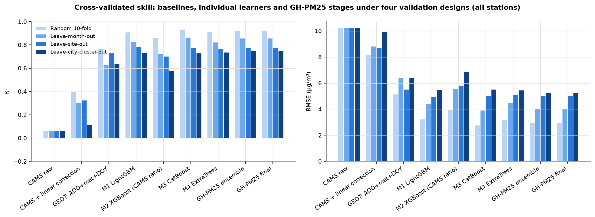
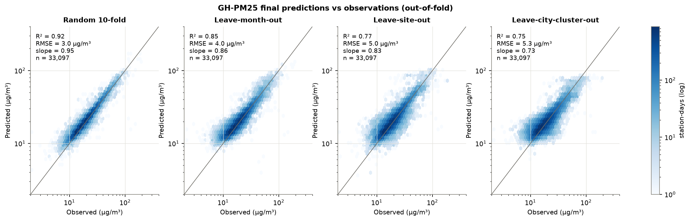
Ranking of designs. Skill falls in the expected order as validation gets stricter: random R² = 0.92, leave-month-out 0.85, leave-site-out 0.77, leave-city-cluster-out 0.75. The drop from random to cluster-out CV is the information leakage that random validation hides.
Ensemble vs single learners. Under leave-city-cluster-out the best single learner, M4 ExtraTrees, ln PM, reaches R² = 0.73, while the operational ensemble reaches 0.75. The ensemble's main benefit is robustness: no single learner is best across every design and subset (Table 5, ensemble_selection.csv).
CAMS contributes little. Raw CAMS explains almost none of the day-to-day and site-to-site variance (R² = 0.06). Dropping every CAMS-derived predictor does not reduce spatial skill (Table 9). Over Ghana, the synoptic signal is carried almost entirely by MERRA-2 humidity, winds and boundary-layer depth, plus seasonality. The CAMS-ratio learner therefore receives zero weight.
Stage-2 kriging: a negative result worth reporting
Residual kriging is common in hybrid PM2.5 models, but here it did not add skill. Without offset removal, kriging raw residuals lowered leave-site-out R². With offset removal, the day-specific anomaly correlogram is short-ranged (\( c_0 \) = 0.41, L = 10 km). Leave-site-out R² still falls steadily as \( \lambda \) rises from 0 to 1 (outputs/stage2_lambda_scan.csv), and under leave-city-cluster-out the change is within ±0.003.
In dense low-cost networks the day-to-day residual at one sensor is mostly calibration noise that does not transfer to its neighbours. Stage 1 already captures the transferable spatial structure through urban-form and population predictors. The operational product therefore uses \( \lambda \) = 0.0. Observation proximity still informs the uncertainty model, and the kriging machinery is retained so \( \lambda \) is re-selected automatically at each retraining as reference monitoring improves.
| Subset | n | Mean obs. | R² | r | RMSE | MAE | Bias | Slope | CAMS R² | CAMS RMSE |
|---|---|---|---|---|---|---|---|---|---|---|
| All stations | 33,097 | 20.4 | 0.75 | 0.87 | 5.3 | 3.4 | 0.3 | 0.73 | 0.06 | 10.2 |
| Ghana | 18,395 | 18.3 | 0.69 | 0.85 | 4.1 | 2.7 | 0.5 | 0.87 | -0.41 | 8.9 |
| Ghana, BAM-1020 reference | 155 | 21.5 | 0.77 | 0.88 | 5.2 | 3.7 | -0.7 | 0.73 | 0.11 | 10.3 |
| All BAM-1020 reference | 791 | 31.3 | 0.59 | 0.77 | 16.7 | 10.6 | 1.6 | 0.57 | 0.54 | 17.8 |
| Ghana south of 8°N | 18,117 | 18.1 | 0.69 | 0.85 | 4.1 | 2.7 | 0.4 | 0.85 | -0.40 | 8.7 |
| Ghana north of 8°N | 278 | 28.9 | 0.60 | 0.91 | 5.2 | 4.1 | 3.5 | 1.01 | -3.45 | 17.5 |
| Harmattan (Dec–Feb) | 7,078 | 29.5 | 0.71 | 0.84 | 7.7 | 4.7 | 0.2 | 0.71 | 0.12 | 13.4 |
| Mar–Nov | 26,019 | 18.0 | 0.66 | 0.82 | 4.4 | 3.0 | 0.4 | 0.63 | -0.47 | 9.1 |
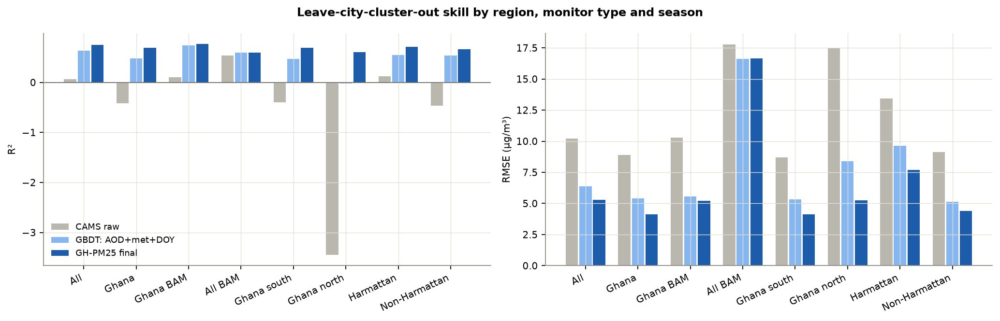
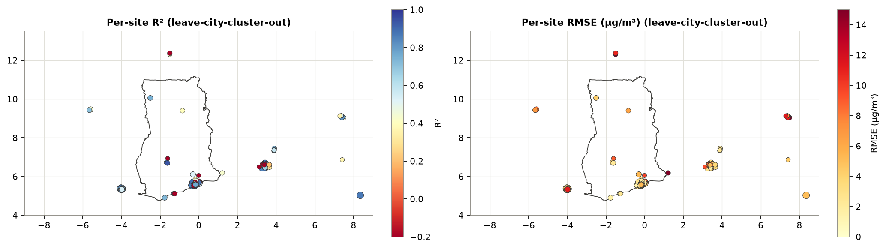
5.3Benchmarking against the existing Ghana product
The Anand et al. (2026) city-level daily series (Zenodo 19636051) was compared with city-mean calibrated observations within 15 km of each city centre, on days where both exist. GH-PM25 values in this comparison are leave-city-cluster-out predictions, meaning the whole city was withheld from training. The Anand et al. product, by contrast, included monitors in these cities during training, so on that count the comparison favours it.
A caveat runs the other way. The "observations" are low-cost sensors harmonised to the US Embassy BAM-1020 with this work's calibration, while Anand et al. used their own co-location corrections. Differences in bias and RMSE therefore partly reflect different calibration references. The correlation coefficient is unaffected by any linear recalibration, so it is the most robust basis for comparison.
| City | Product | Days | Period | Mean obs. | r | R² | RMSE | MAE | Bias |
|---|---|---|---|---|---|---|---|---|---|
| Accra | GH-PM25 (this work, leave-cluster-out) | 517 | 2024-08–2025-12 | 19.0 | 0.96 | 0.90 | 2.5 | 1.5 | 0.8 |
| Accra | Anand et al. 2026 product | 517 | 2024-08–2025-12 | 19.0 | 0.81 | -0.08 | 8.2 | 7.2 | 6.7 |
| Accra | CAMS raw | 517 | 2024-08–2025-12 | 19.0 | 0.83 | -0.20 | 8.6 | 7.6 | -6.8 |
| Kumasi | GH-PM25 (this work, leave-cluster-out) | 72 | 2025-09–2025-12 | 22.8 | 0.82 | 0.65 | 5.2 | 4.1 | 0.3 |
| Kumasi | Anand et al. 2026 product | 72 | 2025-09–2025-12 | 22.8 | 0.52 | -0.83 | 11.8 | 9.3 | 7.9 |
| Kumasi | CAMS raw | 72 | 2025-09–2025-12 | 22.8 | 0.56 | -1.12 | 12.8 | 10.5 | -10.5 |
| Tema | GH-PM25 (this work, leave-cluster-out) | 412 | 2024-08–2025-12 | 20.3 | 0.93 | 0.74 | 4.2 | 3.2 | 0.5 |
| Tema | Anand et al. 2026 product | 412 | 2024-08–2025-12 | 20.3 | 0.81 | 0.14 | 7.6 | 6.5 | 5.8 |
| Tema | CAMS raw | 412 | 2024-08–2025-12 | 20.3 | 0.82 | -0.28 | 9.3 | 8.1 | -7.0 |
| Koforidua | GH-PM25 (this work, leave-cluster-out) | 45 | 2025-11–2025-12 | 19.7 | 0.95 | -2.30 | 6.7 | 6.5 | 6.5 |
| Koforidua | Anand et al. 2026 product | 45 | 2025-11–2025-12 | 19.7 | 0.34 | -23.07 | 18.1 | 17.1 | 17.1 |
| Koforidua | CAMS raw | 45 | 2025-11–2025-12 | 19.7 | 0.52 | -2.89 | 7.3 | 6.6 | -6.5 |
| Somanya | GH-PM25 (this work, leave-cluster-out) | 37 | 2024-08–2024-10 | 9.3 | 0.53 | -8.72 | 9.8 | 9.4 | 9.4 |
| Somanya | Anand et al. 2026 product | 37 | 2024-08–2024-10 | 9.3 | 0.19 | -15.22 | 12.7 | 12.2 | 12.2 |
| Somanya | CAMS raw | 37 | 2024-08–2024-10 | 9.3 | 0.19 | -0.27 | 3.6 | 2.5 | -1.3 |
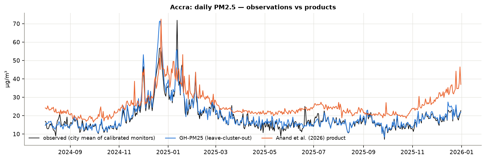
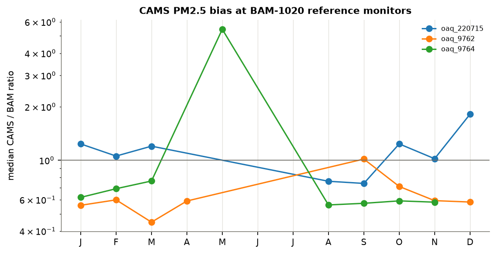
5.4What drives the predictions
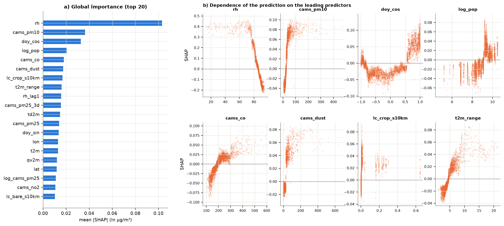
| Predictor | mean |SHAP| (ln µg/m³) |
|---|---|
| rh | 0.1030 |
| cams_pm10 | 0.0364 |
| doy_cos | 0.0327 |
| log_pop | 0.0206 |
| cams_co | 0.0180 |
| cams_dust | 0.0175 |
| lc_crop_s10km | 0.0168 |
| t2m_range | 0.0161 |
| rh_lag1 | 0.0156 |
| cams_pm25_3d | 0.0156 |
| td2m | 0.0148 |
| cams_pm25 | 0.0141 |
| doy_sin | 0.0137 |
| lon | 0.0131 |
| t2m | 0.0130 |
| Variant | Subset | Features | R² | RMSE | MAE | Bias |
|---|---|---|---|---|---|---|
| all_features | all | 70 | 0.730 | 5.47 | 3.39 | -0.72 |
| all_features | ghana | 70 | 0.649 | 4.43 | 2.67 | -0.37 |
| no_static | all | 44 | 0.718 | 5.59 | 3.49 | -0.98 |
| no_static | ghana | 44 | 0.670 | 4.30 | 2.75 | -0.84 |
| no_fire | all | 67 | 0.729 | 5.48 | 3.40 | -0.65 |
| no_fire | ghana | 67 | 0.656 | 4.39 | 2.67 | -0.25 |
| no_cams | all | 57 | 0.736 | 5.41 | 3.36 | -0.80 |
| no_cams | ghana | 57 | 0.670 | 4.30 | 2.63 | -0.43 |
| no_coords | all | 68 | 0.727 | 5.50 | 3.43 | -0.65 |
| no_coords | ghana | 68 | 0.651 | 4.42 | 2.67 | -0.17 |
| no_merra_met | all | 47 | 0.577 | 6.85 | 4.28 | -0.65 |
| no_merra_met | ghana | 47 | 0.621 | 4.60 | 3.08 | -0.00 |
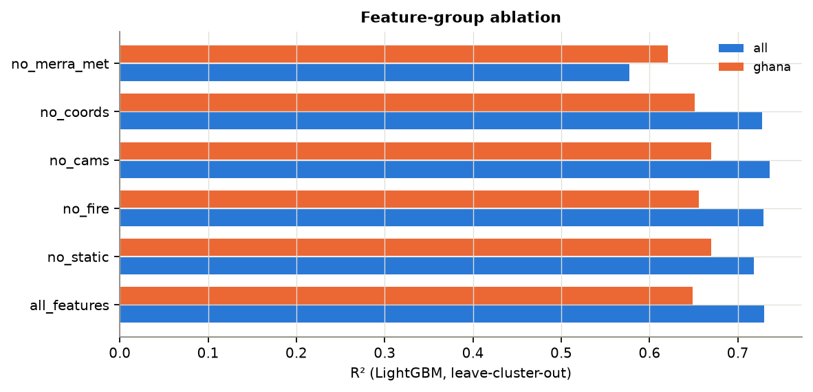
5.5Uncertainty and spatial dependence
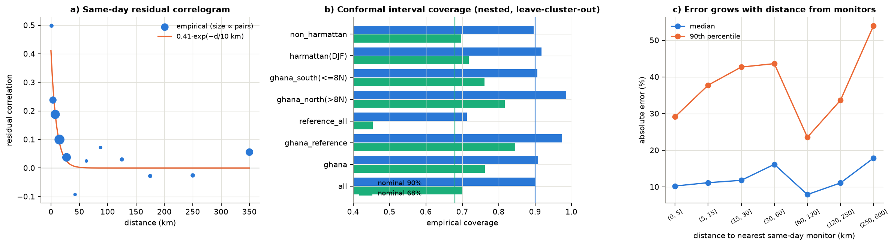
| Subset | Nominal | Empirical coverage | Median width µg/m³ | n |
|---|---|---|---|---|
| All stations | 90% | 90.1% | 14.2 | 33,097 |
| Ghana | 90% | 90.8% | 12.9 | 18,395 |
| Ghana, BAM-1020 reference | 90% | 97.4% | 23.1 | 155 |
| All BAM-1020 reference | 90% | 71.3% | 23.4 | 791 |
| Ghana north of 8°N | 90% | 98.6% | 22.3 | 278 |
| Ghana south of 8°N | 90% | 90.7% | 12.8 | 18,117 |
| Harmattan (Dec–Feb) | 90% | 91.7% | 18.7 | 7,078 |
| Mar–Nov | 90% | 89.6% | 13.3 | 26,019 |
| All stations | 68% | 70.2% | 6.9 | 33,097 |
| Ghana | 68% | 76.2% | 6.3 | 18,395 |
| Ghana, BAM-1020 reference | 68% | 84.5% | 10.8 | 155 |
| All BAM-1020 reference | 68% | 45.4% | 11.1 | 791 |
| Ghana north of 8°N | 68% | 81.7% | 10.9 | 278 |
| Ghana south of 8°N | 68% | 76.2% | 6.3 | 18,117 |
| Harmattan (Dec–Feb) | 68% | 71.8% | 9.1 | 7,078 |
| Mar–Nov | 68% | 69.7% | 6.4 | 26,019 |
The residual correlogram shows correlation decaying over tens of kilometres ( \( c_0 \) = 0.41, L = 10 km). Kriging therefore sharpens maps inside and around monitored cities, but adds little in the sparsely monitored north. The scale model captures this: intervals widen with distance from monitors and during the Harmattan.
5.6Maps
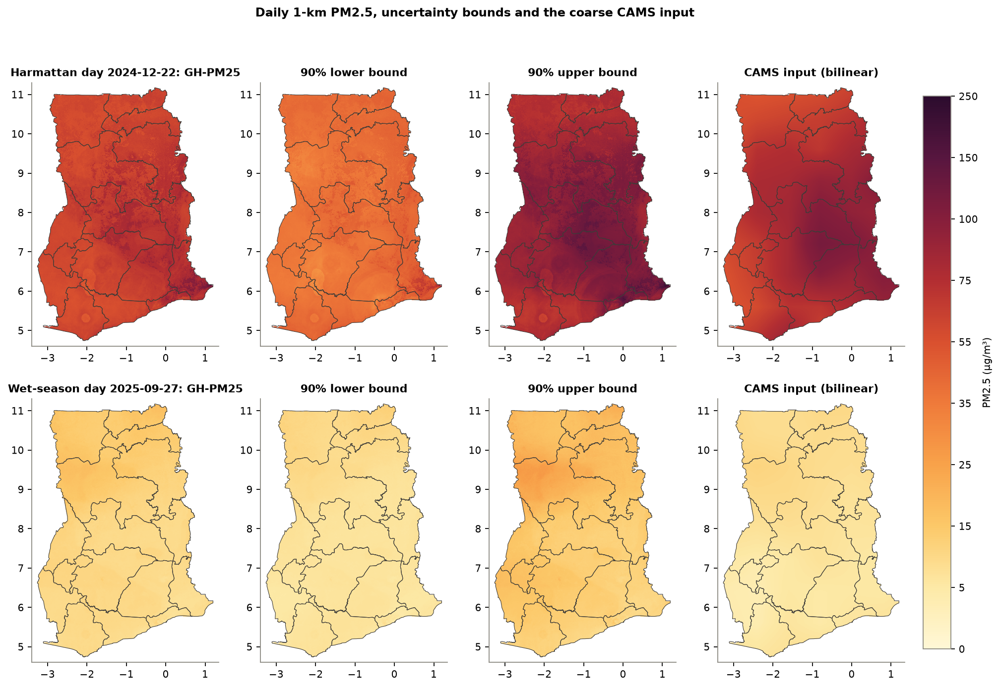
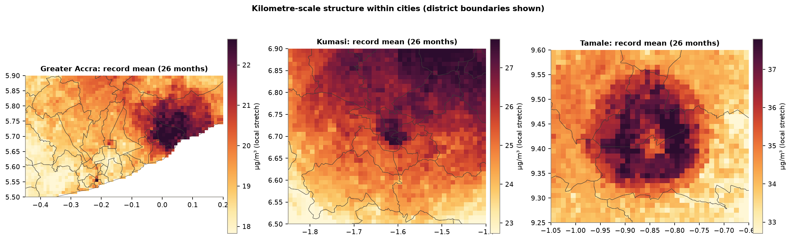
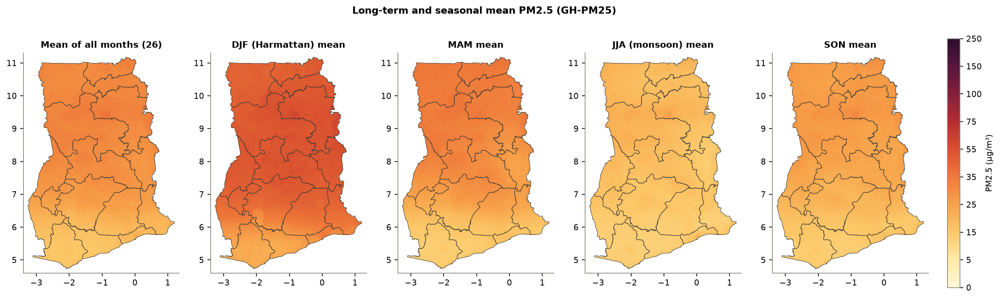
5.7Population exposure
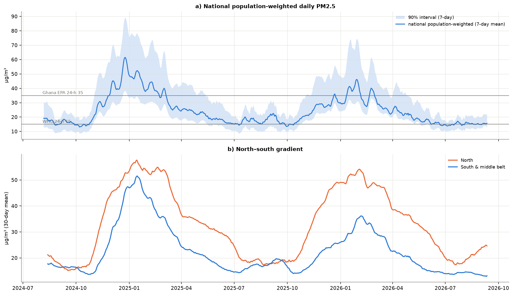
| Year | Days | Pop.-weighted mean µg/m³ | Days national pop.-weighted >35 | Mean share of pop. >15 | Mean share of pop. >35 |
|---|---|---|---|---|---|
| 2024.0 | 150 | 26.0 | 39 | 0.688 | 0.251 |
| 2025.0 | 365 | 24.8 | 60 | 0.769 | 0.193 |
| 2026.0 | 254 | 22.7 | 31 | 0.642 | 0.158 |
| Region | 2024 | 2025 | 2026 |
|---|---|---|---|
| Upper East Region | 29.0 | 33.2 | 34.2 |
| Upper West Region | 28.8 | 32.5 | 33.4 |
| Northern Region | 33.2 | 34.9 | 33.1 |
| North East Region | 29.2 | 32.4 | 32.9 |
| Savannah Region | 32.5 | 33.4 | 31.5 |
| Bono East Region | 33.2 | 31.6 | 29.2 |
| Oti Region | 31.2 | 29.0 | 28.4 |
| Bono Region | 32.8 | 31.0 | 26.3 |
| Ahafo Region | 29.9 | 27.8 | 22.9 |
| Ashanti Region | 27.8 | 26.6 | 22.4 |
| Volta Region | 26.6 | 23.3 | 21.8 |
| Eastern Region | 23.7 | 22.1 | 19.3 |
| Western North Region | 23.8 | 21.6 | 18.0 |
| Greater Accra Region | 21.9 | 19.6 | 18.0 |
| Central Region | 19.2 | 16.8 | 15.3 |
| Western Region | 18.8 | 16.4 | 15.2 |
6Discussion and limitations
What is new compared with existing products
- Honest validation. The ensemble is selected and weighted under leave-city-cluster-out validation, and all four designs are reported side by side.
- Sensor harmonisation before training. Network-specific corrections are guarded against extrapolation, and calibration uncertainty is carried into the training weights.
- Kilometre-scale information. Urban form, population, lights and roads, instead of downscaled 10–50 km satellite and reanalysis fields alone.
- Explicit fire physics. Upwind-weighted FRP from a consistent single-sensor 375 m record with near-real-time delivery.
- Stage-2 residual kriging tested before use. Its strength is set by validation, and the evidence that it does not help dense low-cost networks is reported.
- Calibrated per-pixel uncertainty and an area-of-applicability mask.
- A fully keyless, reproducible operational chain with product tiers and a public portal.
Limitations
- Reference data. Ghana's only open reference monitor (US Embassy Accra) stopped regular reporting in March 2025, and none has ever operated in the north. Calibration therefore rests on coastal co-location. Its humidity range is narrow and it sees few extreme dust days, so Harmattan peaks and northern concentrations carry more uncertainty than the headline figures suggest. The conformal intervals partly reflect this.
- Short training record. Training starts in August 2022 (CAMS availability), and most Ghanaian data are from 2024–2026. Hindcasts before 2022 are not produced, and trends over this short record should be interpreted cautiously.
- No satellite AOD at 1 km. The product does not use kilometre-scale satellite AOD (MAIAC or VIIRS), which needs an Earthdata account or heavy swath processing. CAMS assimilates satellite AOD at coarse resolution. Adding MAIAC as an optional input is a straightforward extension (Section 7).
- Static layers. Static layers are fixed (WorldCover 2021, WorldPop 2024, VIIRS 2023–24), so rapid urban change is not captured.
- Operational sources. Operational inputs depend on third-party free services with rate limits (Open-Meteo, NASA POWER). The system logs failures and degrades gracefully, but availability is not guaranteed.
Recommendations
- Co-locate at least one sensor of each network with a BAM or FEM monitor in Tamale or Bolgatanga for a full Harmattan season.
- Restore open reporting of a reference monitor in Accra.
- Obtain a free OpenAQ API key to enable hourly live station layers.
- Add MAIAC AOD when Earthdata credentials are available.
- Recalibrate and retrain monthly as the national Clarity network grows.
7Reproducibility
ghana_pm25/ python package sources/ground.py OpenAQ archive + AirNow embassy files, QC, daily means sources/openmeteo.py CAMS composition (paced, cached) sources/power.py MERRA-2 / GEOS via NASA POWER sources/firms.py FIRMS archives, EFIRE EDR, orbit-model granule selection, fire predictors sources/static.py WorldCover, DEM, WorldPop, VIIRS lights, OSM roads, coast distance calibration.py sensor harmonisation features.py predictor engineering model.py ensemble, stacking, correlogram, kriging, conformal, AOA predict.py daily 1-km mapping and regional statistics nrt.py near-real-time updates, IFS bias adjustment, product tiers export.py NetCDF / GeoTIFF / portal encoders scripts/ 01_download_ground.py 02_build_static.py 10_download_dynamic.py 03_train_evaluate.py 04_predict_history.py 05_export_portal.py 06_make_figures.py 07_build_report.py run_daily.py qa_fire_template.py qa_portal.py schedule_windows_task.ps1 portal/ static web portal (MapLibre GL + d3) outputs/daily/YYYY/GH-PM25_1km_YYYYMMDD.nc
A full rebuild runs the scripts in numerical order. The operational cycle is python scripts/run_daily.py, and the portal is served as static files (for example python -m http.server --directory portal). Software: Python 3.12, LightGBM, XGBoost, CatBoost, scikit-learn, SHAP, xarray, rasterio, shapely, MapLibre GL JS and d3.
References
- Adong, P., Bainomugisha, E., Okure, D., Sserunjogi, R. (2022). Applying machine learning for large scale field calibration of low-cost PM2.5 and PM10 air pollution sensors. Applied AI Letters 3, e76.
- Alli, A.S., Clark, S.N., Hughes, A., et al. (2021). Spatial-temporal patterns of ambient fine particulate matter (PM2.5) and black carbon (BC) pollution in Accra. Environ. Res. Lett. 16, 074013.
- Alli, A.S., et al. (2023). High-resolution patterns and inequalities in ambient fine particle mass (PM2.5) and black carbon (BC) in the Greater Accra Metropolis, Ghana. Sci. Total Environ. 875, 162582.
- Anand, A., Amooli, J.A., Amoah, S., et al., Westervelt, D.M. (2026). Two decades of kilometer-scale daily PM2.5 from satellite observations and machine learning reveal geographically diverging exposure in Ghana. EarthArXiv, doi:10.31223/X5KR3D.
- Barkjohn, K.K., Gantt, B., Clements, A.L. (2021). Development and application of a United States-wide correction for PM2.5 data collected with the PurpleAir sensor. Atmos. Meas. Tech. 14, 4617–4637.
- Di, Q., Amini, H., Shi, L., et al. (2019). An ensemble-based model of PM2.5 concentration across the contiguous United States with high spatiotemporal resolution. Environ. Int. 130, 104909.
- Gueymard, C.A., Yang, D. (2020). Worldwide validation of CAMS and MERRA-2 reanalysis aerosol optical depth products using 15 years of AERONET observations. Atmos. Environ. 225, 117216.
- Hengl, T., Nussbaum, M., Wright, M.N., Heuvelink, G.B.M., Gräler, B. (2018). Random forest as a generic framework for predictive modeling of spatial and spatio-temporal variables. PeerJ 6, e5518.
- Inness, A., et al. (2019). The CAMS reanalysis of atmospheric composition. Atmos. Chem. Phys. 19, 3515–3556.
- Just, A.C., Arfer, K.B., Rush, J., et al. (2020). Advancing methodologies for applying machine learning and evaluating spatiotemporal models of PM2.5 using satellite data over large regions. Atmos. Environ. 239, 117649.
- Lei, J., G'Sell, M., Rinaldo, A., Tibshirani, R.J., Wasserman, L. (2018). Distribution-free predictive inference for regression. J. Am. Stat. Assoc. 113, 1094–1111.
- McFarlane, C., Raheja, G., Malings, C., et al., Westervelt, D.M. (2021). Application of Gaussian mixture regression for the correction of low cost PM2.5 monitoring data in Accra, Ghana. ACS Earth Space Chem. 5, 2268–2279.
- Meyer, H., Pebesma, E. (2021). Predicting into unknown space? Estimating the area of applicability of spatial prediction models. Methods Ecol. Evol. 12, 1620–1633.
- Meyer, H., Pebesma, E. (2022). Machine learning-based global maps of ecological variables and the challenge of assessing them. Nat. Commun. 13, 2208.
- Ploton, P., et al. (2020). Spatial validation reveals poor predictive performance of large-scale ecological mapping models. Nat. Commun. 11, 4540.
- Raheja, G., Nimo, J., Appoh, E.K., et al., Westervelt, D.M. (2023). Low-cost sensor performance intercomparison, correction factor development, and 2+ years of ambient PM2.5 monitoring in Accra, Ghana. Environ. Sci. Technol. 57, 10708–10720.
- Shtein, A., Kloog, I., Schwartz, J., et al. (2020). Estimating daily PM2.5 and PM10 over Italy using an ensemble model. Environ. Sci. Technol. 54, 120–128.
- van Donkelaar, A., Hammer, M.S., Bindle, L., et al. (2021). Monthly global estimates of fine particulate matter and their uncertainty. Environ. Sci. Technol. 55, 15287–15300.
- Wei, J., Li, Z., Lyapustin, A., et al. (2023). First close insight into global daily gapless 1 km PM2.5 pollution, variability, and health impact. Nat. Commun. 14, 8349.
- Westervelt, D.M., Amooli, J.A., Anand, A. (2025). Twenty years of high spatiotemporal resolution estimates of daily PM2.5 in West Africa using satellite data, surface monitors, and machine learning. ACS ES&T Air 2, 1468–1477.
- World Health Organization (2021). WHO global air quality guidelines: particulate matter (PM2.5 and PM10), ozone, nitrogen dioxide, sulfur dioxide and carbon monoxide. Geneva.
- Ghana Standards Authority (2019). GS 1236:2019 Environment and health protection — requirements for ambient air quality and point source/stack emissions.
Appendix A. Predictor dictionary
| Group | Predictor | Definition |
|---|---|---|
| CAMS composition | cams_pm25 | CAMS PM2.5 (µg/m³), daily mean |
| CAMS composition | cams_pm10 | CAMS PM10 |
| CAMS composition | cams_aod | CAMS total AOD 550 nm |
| CAMS composition | cams_dust | CAMS dust surface concentration |
| CAMS composition | cams_co | CAMS carbon monoxide (combustion/biomass-burning tracer) |
| CAMS composition | cams_no2 | CAMS NO₂ (traffic/urban tracer) |
| CAMS composition | cams_pm25_max | CAMS hourly PM2.5 maximum |
| MERRA-2 meteorology/aerosol | t2m | 2-m temperature (°C) |
| MERRA-2 meteorology/aerosol | t2m_range | diurnal temperature range |
| MERRA-2 meteorology/aerosol | rh | 2-m relative humidity (%) |
| MERRA-2 meteorology/aerosol | qv2m | specific humidity (g/kg) |
| MERRA-2 meteorology/aerosol | td2m | dew point |
| MERRA-2 meteorology/aerosol | precip | precipitation (mm/day, IMERG-corrected) |
| MERRA-2 meteorology/aerosol | ws10 | 10-m wind speed |
| MERRA-2 meteorology/aerosol | u10 | 10-m zonal wind |
| MERRA-2 meteorology/aerosol | v10 | 10-m meridional wind |
| MERRA-2 meteorology/aerosol | ps | surface pressure |
| MERRA-2 meteorology/aerosol | ssrd | surface shortwave down (kWh/m²/day) |
| MERRA-2 meteorology/aerosol | cloud | cloud fraction |
| MERRA-2 meteorology/aerosol | merra_aod | MERRA-2 AOD 550 nm |
| MERRA-2 meteorology/aerosol | blh | PBL depth from MERRA-2 PBLTOP (m) |
| Derived dynamic | log_cams_pm25 | ln CAMS PM2.5 |
| Derived dynamic | cams_pm25_lag1 | CAMS PM2.5 day t−1 |
| Derived dynamic | cams_pm25_3d | CAMS PM2.5 3-day mean |
| Derived dynamic | cams_dust_lag1 | CAMS dust t−1 |
| Derived dynamic | dust_frac | dust / (PM10 + 1) |
| Derived dynamic | log_cams_dust | ln(1+dust) |
| Derived dynamic | precip_3d | 3-day precipitation |
| Derived dynamic | precip_lag1 | precipitation t−1 |
| Derived dynamic | log_blh | ln PBL depth |
| Derived dynamic | ventilation | ventilation coefficient PBL × wind (m²/s) |
| Derived dynamic | rh_lag1 | RH t−1 |
| Derived dynamic | ws10_lag1 | wind speed t−1 |
| Derived dynamic | merra_aod_3d | 3-day MERRA-2 AOD |
| Derived dynamic | wind_dir_sin | sin wind direction |
| Derived dynamic | wind_dir_cos | cos wind direction |
| Fire | frp_25km | ln(1+FRP) within 25 km, t and t−1 |
| Fire | frp_100km | ln(1+FRP) within 100 km |
| Fire | fire_upwind | upwind-weighted fire influence within 500 km |
| Static 1-km | elev | mean elevation (m) |
| Static 1-km | elev_sd | sub-grid elevation SD |
| Static 1-km | elev_rel_10km | elevation relative to 10-km mean |
| Static 1-km | lc_tree | tree-cover fraction |
| Static 1-km | lc_shrub | shrub fraction |
| Static 1-km | lc_grass | grassland fraction |
| Static 1-km | lc_crop | cropland fraction |
| Static 1-km | lc_built | built-up fraction |
| Static 1-km | lc_bare | bare/sparse fraction |
| Static 1-km | lc_water | water fraction |
| Static 1-km | log_pop | ln(1+population density) |
| Static 1-km | log_ntl | ln(1+night-time radiance) |
| Static 1-km | road_density | major-road density (km/km²) |
| Static 1-km | dist_road | ln(1+distance to major road km) |
| Static 1-km | dist_coast | ln(1+distance to coast km) |
| Static 1-km | lc_built_s3km | lc_built (3-km Gaussian) |
| Static 1-km | lc_built_s10km | lc_built (10-km Gaussian) |
| Static 1-km | log_pop_s3km | log_pop (3-km Gaussian) |
| Static 1-km | log_pop_s10km | log_pop (10-km Gaussian) |
| Static 1-km | log_ntl_s3km | log_ntl (3-km Gaussian) |
| Static 1-km | log_ntl_s10km | log_ntl (10-km Gaussian) |
| Static 1-km | road_density_s3km | road_density (3-km Gaussian) |
| Static 1-km | road_density_s10km | road_density (10-km Gaussian) |
| Static 1-km | lc_crop_s10km | lc_crop (10-km Gaussian) |
| Static 1-km | lc_tree_s10km | lc_tree (10-km Gaussian) |
| Static 1-km | lc_bare_s10km | lc_bare (10-km Gaussian) |
| Calendar | doy_sin | sin day-of-year |
| Calendar | doy_cos | cos day-of-year |
| Calendar | dow | day of week |
| Coordinates | lat | latitude |
| Coordinates | lon | longitude |
Appendix B. Model configuration
Each base learner's hyperparameters were chosen by random search (12 candidates plus the default) minimising weighted log-space RMSE under 5-fold leave-city-cluster-out cross-validation. The cluster-to-fold assignment was shuffled independently of the evaluation folds; the full search history is in outputs/tuning_history.csv.
| Learner | Configuration |
|---|---|
| M1 LightGBM, ln PM | num_leaves=63, min_child_samples=50, learning_rate=0.02, n_estimators=800, colsample_bytree=0.4, reg_lambda=20.0 |
| M2 XGBoost, ln(PM/CAMS) | max_depth=4, min_child_weight=50, learning_rate=0.05, n_estimators=800, colsample_bytree=0.8, reg_lambda=5.0 |
| M3 CatBoost, ln PM | defaults |
| M4 ExtraTrees, ln PM | min_samples_leaf=1, max_features=0.7, n_estimators=300 |
| Scale model | LightGBM n=400, lr=0.03, leaves=15, min_child=100 |
| Kriging | exponential + nugget, 300 km search radius, Cholesky solve |
| AOA | top-20 gain-weighted predictors, 6,000 training reference points, threshold Q3 + 1.5·IQR |
Appendix C. Ghanaian monitoring sites
| ID | Site | Network | Lat | Lon | Days | Reference |
|---|---|---|---|---|---|---|
| oaq_2453497 | Afri-SET | AirGradient | 5.6538 | -0.1859 | 760 | |
| oaq_2453500 | Afri-SET | AirGradient | 5.6538 | -0.1859 | 768 | |
| oaq_2453501 | Afri-SET | AirGradient | 5.6538 | -0.1859 | 739 | |
| oaq_1374750 | Built Environment UESD | AirGradient | 6.0525 | -0.0078 | 149 | |
| oaq_4967224 | Divine healer's Church, Bethlehem | AirGradient | 5.7046 | -0.0103 | 387 | |
| oaq_4959011 | Kpone Methodists School | AirGradient | 5.6915 | 0.0554 | 180 | |
| oaq_6109067 | Kumasi | AirGradient | 6.9320 | -1.6080 | 34 | |
| oaq_1236045 | Physics Department-UG-Accra/CAOA-UESD | AirGradient | 5.6510 | -0.1860 | 703 | |
| oaq_4959010 | Satet International School, Tema Manhean | AirGradient | 5.6603 | 0.0275 | 371 | |
| oaq_4958512 | Tema Community 25 Estate | AirGradient | 5.7247 | 0.0173 | 316 | |
| oaq_6494903 | Tema Community 3 | AirGradient | 5.6210 | -0.0238 | 14 | |
| oaq_4946349 | Tema Community 3 SSNIT Flat | AirGradient | 5.6210 | -0.0238 | 230 | |
| oaq_4948390 | Tema Community 7, Royal School | AirGradient | 5.6643 | -0.0090 | 432 | |
| oaq_4959012 | Tema Port | AirGradient | 5.6347 | 0.0089 | 393 | |
| oaq_6313993 | +233, North Ridge | Clarity | 5.5738 | -0.1954 | 68 | |
| oaq_3025584 | 37 Lorry Station | Clarity | 5.5889 | -0.1796 | 637 | |
| oaq_947135 | A7RWN47G | Clarity | 6.7542 | -1.7714 | 35 | |
| oaq_1008918 | AM9CQFVL | Clarity | 6.7569 | -1.7642 | 4 | |
| oaq_947145 | ANHLHLNJ | Clarity | 5.6511 | -0.1859 | 40 | |
| oaq_947129 | ARJWQ6WV | Clarity | 5.6511 | -0.1859 | 32 | |
| oaq_947131 | AWJQ4MVT | Clarity | 6.7133 | -1.5286 | 32 | |
| oaq_6302944 | Abeka Total Filling Station | Clarity | 5.5979 | -0.2336 | 69 | |
| oaq_6242085 | Aburi Town Center | Clarity | 5.8441 | -0.1752 | 108 | |
| oaq_6341624 | Accra New Town | Clarity | 5.5878 | -0.2075 | 61 | |
| oaq_6302945 | Achimota New Station | Clarity | 5.6208 | -0.2256 | 71 | |
| oaq_6301620 | Adenta Commandos Last Stop | Clarity | 5.7326 | -0.1447 | 73 | |
| oaq_3025588 | Agbogbloshie | Clarity | 5.5515 | -0.2193 | 603 | |
| oaq_6303239 | Alajo Market | Clarity | 5.5912 | -0.2169 | 77 | |
| oaq_3091472 | Amasaman | Clarity | 5.7031 | -0.2995 | 496 | |
| oaq_3025583 | Ashaley Botwe School Junction | Clarity | 5.6761 | -0.1241 | 529 | |
| oaq_6092970 | Ashiaman Market Area | Clarity | 5.6884 | -0.0293 | 256 | |
| oaq_6322654 | Asylum Down | Clarity | 5.5662 | -0.2057 | 58 | |
| oaq_6301618 | Aviation Road, Adenta | Clarity | 5.6884 | -0.1481 | 72 | |
| oaq_6313991 | Black Star Square | Clarity | 5.5495 | -0.1903 | 64 | |
| oaq_6311212 | Burma Hills, Tse Addo | Clarity | 5.6065 | -0.1394 | 71 | |
| oaq_6242086 | CCMA Office | Clarity | 5.1113 | -1.2477 | 124 | |
| oaq_6322655 | Cantonments | Clarity | 5.5819 | -0.1668 | 70 | |
| oaq_6242083 | Cape Coast UCC_North Campus | Clarity | 5.1155 | -1.2928 | 94 | |
| oaq_5907572 | County Hospital, Abrepo, Kumasi [Ghana AQ Project] | Clarity | 6.7268 | -1.6576 | 168 | |
| oaq_6302788 | Dansoman Keep Fit Area | Clarity | 5.5565 | -0.2759 | 69 | |
| oaq_6302789 | Dansoman Market | Clarity | 5.5424 | -0.2648 | 73 | |
| oaq_3025580 | Dansoman Roundabout | Clarity | 5.5585 | -0.2645 | 572 | |
| oaq_6302787 | Darkuman Christian Complex School | Clarity | 5.5902 | -0.2567 | 44 | |
| oaq_6302990 | Dome Road, Christian Village | Clarity | 5.6368 | -0.2166 | 66 | |
| oaq_6302790 | Dr. Busia Street, Sakaman | Clarity | 5.5739 | -0.2658 | 74 | |
| oaq_6297280 | Dzorwulu Fidelity Bank | Clarity | 5.6105 | -0.2048 | 72 | |
| oaq_6301616 | FOTS International School, Amrahia | Clarity | 5.7702 | -0.1330 | 70 | |
| oaq_6309349 | Flagstaff House Basic School | Clarity | 5.5826 | -0.1859 | 60 | |
| oaq_3025585 | Graphic Road | Clarity | 5.5590 | -0.2253 | 592 | |
| oaq_6301619 | Jungle Avenue, A & C Mall | Clarity | 5.6421 | -0.1517 | 73 | |
| oaq_3025592 | Kaneshie Market | Clarity | 5.5661 | -0.2355 | 457 | |
| oaq_6242084 | Kasoa Overhead Bridge | Clarity | 5.5343 | -0.4247 | 43 | |
| oaq_6309352 | Kawukudi Community Youth Center | Clarity | 5.5930 | -0.1862 | 65 | |
| oaq_6130293 | Koforidua_ANUC | Clarity | 6.1094 | -0.3021 | 210 | |
| oaq_6302946 | Kotobabi Lorry Station | Clarity | 5.5959 | -0.2092 | 69 | |
| oaq_6311211 | Krispat Hearing Center, Pig Farm | Clarity | 5.5998 | -0.1971 | 79 | |
| oaq_6242087 | Kumasi Adum | Clarity | 6.6947 | -1.6211 | 124 | |
| oaq_3025593 | Kwame Nkrumah Circle | Clarity | 5.5694 | -0.2140 | 496 | |
| oaq_3025581 | Kwashieman Presby Church | Clarity | 5.5939 | -0.2688 | 661 | |
| oaq_6311173 | La Palm Royal Beach Hotel, Labadi | Clarity | 5.5633 | -0.1429 | 77 | |
| oaq_3025586 | Lapaz Intersection | Clarity | 5.6072 | -0.2490 | 673 | |
| oaq_6297279 | Lartebiokorshie Cluster of Schools | Clarity | 5.5542 | -0.2391 | 71 | |
| oaq_3025587 | Madina Zongo Junction | Clarity | 5.6779 | -0.1729 | 599 | |
| oaq_3025589 | Makola | Clarity | 5.5485 | -0.2072 | 568 | |
| oaq_6309347 | Mallam Atta Market | Clarity | 5.5796 | -0.2073 | 67 | |
| oaq_6309346 | Mallam Market | Clarity | 5.5735 | -0.2789 | 62 | |
| oaq_6309350 | Mamobi General Hospital | Clarity | 5.5919 | -0.1996 | 70 | |
| oaq_6297281 | Mataheko PIWC | Clarity | 5.5725 | -0.2504 | 74 | |
| oaq_6406583 | Mpoase Latter Day Saints Church | Clarity | 5.5264 | -0.2707 | 42 | |
| oaq_6309348 | New Town College | Clarity | 5.5832 | -0.2083 | 11 | |
| oaq_3025591 | Nima Market | Clarity | 5.5821 | -0.1986 | 504 | |
| oaq_6297282 | Okponglo Junction | Clarity | 5.6406 | -0.1784 | 71 | |
| oaq_3025590 | Osu Oxford Street | Clarity | 5.5597 | -0.1820 | 537 | |
| oaq_6301621 | Otinibi Last Stop | Clarity | 5.7905 | -0.1491 | 76 | |
| oaq_6301622 | Pantang Hospital | Clarity | 5.7144 | -0.1874 | 35 | |
| oaq_6235651 | Printex Junction, Spintex Rd | Clarity | 5.6403 | -0.1197 | 20 | |
| oaq_6313992 | Ridge Hospital | Clarity | 5.5622 | -0.1989 | 70 | |
| oaq_6301617 | Spintex Road (China Marble Town) | Clarity | 5.6403 | -0.1216 | 68 | |
| oaq_6322656 | TED Academy, Banana Inn | Clarity | 5.5420 | -0.2538 | 65 | |
| oaq_6242082 | Takoradi Market Circle | Clarity | 4.8999 | -1.7629 | 162 | |
| oaq_6242088 | Tamale Central High Street | Clarity | 9.4034 | -0.8412 | 119 | |
| oaq_6092971 | Tema Community Center | Clarity | 5.5886 | -0.2687 | 57 | |
| oaq_6302989 | Tesano Police Station | Clarity | 5.6052 | -0.2256 | 62 | |
| oaq_3025594 | Tetteh Quarshie Interchange | Clarity | 5.6192 | -0.1763 | 596 | |
| oaq_6301615 | Tipper Junction Road, Oyarifa | Clarity | 5.7493 | -0.1710 | 68 | |
| oaq_6242081 | Wa Main Traffic | Clarity | 10.0617 | -2.5083 | 159 | |
| oaq_3025582 | West Hills Mall | Clarity | 5.5458 | -0.3423 | 627 | |
| oaq_367218 | A7RWN47G | Clarity (legacy 2022-23) | 6.7542 | -1.7714 | 203 | |
| oaq_367219 | AM9CQFVL | Clarity (legacy 2022-23) | 6.7569 | -1.7642 | 79 | |
| oaq_367216 | ANHLHLNJ | Clarity (legacy 2022-23) | 5.6511 | -0.1859 | 216 | |
| oaq_367215 | ARJWQ6WV | Clarity (legacy 2022-23) | 5.6511 | -0.1859 | 224 | |
| oaq_367217 | AWJQ4MVT | Clarity (legacy 2022-23) | 6.7133 | -1.5286 | 201 | |
| oaq_9764 | US Diplomatic Post: Accra | StateAir Accra | 5.5794 | -0.1707 | 664 | BAM-1020 |
| oaq_6109213 | nan | Unknown | 6.6931 | -1.6088 | 26 |
Appendix D. Per-site accuracy
| Site | Network | Lat | Lon | Days | Mean obs. | R² | r | RMSE | MAE | Bias |
|---|---|---|---|---|---|---|---|---|---|---|
| Lapaz Intersection | Clarity | 5.607 | -0.249 | 673 | 18.7 | 0.86 | 0.98 | 2.7 | 1.9 | 1.7 |
| Kwashieman Presby Church | Clarity | 5.594 | -0.269 | 661 | 16.9 | 0.70 | 0.98 | 3.8 | 3.3 | 3.2 |
| Afri-SET | AirGradient | 5.654 | -0.186 | 639 | 17.2 | 0.58 | 0.87 | 4.5 | 3.3 | 2.1 |
| 37 Lorry Station | Clarity | 5.589 | -0.180 | 637 | 18.2 | 0.85 | 0.97 | 2.7 | 1.8 | 1.4 |
| Afri-SET | AirGradient | 5.654 | -0.186 | 634 | 19.2 | 0.70 | 0.87 | 4.0 | 2.8 | 0.2 |
| West Hills Mall | Clarity | 5.546 | -0.342 | 627 | 16.5 | 0.85 | 0.98 | 2.7 | 2.1 | 2.0 |
| Afri-SET | AirGradient | 5.654 | -0.186 | 605 | 17.6 | 0.18 | 0.54 | 9.2 | 4.7 | 2.0 |
| Agbogbloshie | Clarity | 5.551 | -0.219 | 603 | 23.0 | 0.54 | 0.95 | 4.9 | 4.4 | -4.3 |
| Madina Zongo Junction | Clarity | 5.678 | -0.173 | 599 | 20.6 | 0.85 | 0.97 | 2.5 | 1.5 | 0.4 |
| Tetteh Quarshie Interchange | Clarity | 5.619 | -0.176 | 596 | 17.1 | 0.69 | 0.98 | 4.1 | 3.4 | 3.4 |
| Physics Department-UG-Accra/CAOA-UESD | AirGradient | 5.651 | -0.186 | 594 | 17.6 | 0.50 | 0.77 | 5.7 | 3.1 | 1.6 |
| Graphic Road | Clarity | 5.559 | -0.225 | 592 | 19.5 | 0.92 | 0.96 | 2.0 | 1.5 | -0.2 |
| Dansoman Roundabout | Clarity | 5.559 | -0.264 | 572 | 18.1 | 0.82 | 0.92 | 3.3 | 2.1 | 1.0 |
| Makola | Clarity | 5.548 | -0.207 | 568 | 19.4 | 0.87 | 0.96 | 2.7 | 2.0 | -1.7 |
| Osu Oxford Street | Clarity | 5.560 | -0.182 | 537 | 17.0 | 0.86 | 0.96 | 2.7 | 2.1 | 1.5 |
| Ashaley Botwe School Junction | Clarity | 5.676 | -0.124 | 529 | 17.8 | 0.80 | 0.99 | 3.6 | 2.9 | 2.9 |
| Nima Market | Clarity | 5.582 | -0.199 | 504 | 18.1 | 0.70 | 0.92 | 3.7 | 2.2 | 1.9 |
| Kwame Nkrumah Circle | Clarity | 5.569 | -0.214 | 496 | 20.4 | 0.91 | 0.97 | 2.3 | 1.7 | -1.3 |
| Amasaman | Clarity | 5.703 | -0.300 | 496 | 18.3 | 0.89 | 0.95 | 2.7 | 1.8 | 0.8 |
| Kaneshie Market | Clarity | 5.566 | -0.235 | 457 | 19.0 | 0.93 | 0.98 | 1.7 | 1.1 | 0.3 |
| Tema Community 7, Royal School | AirGradient | 5.664 | -0.009 | 432 | 19.2 | 0.41 | 0.77 | 5.1 | 4.2 | -2.8 |
| Tema Port | AirGradient | 5.635 | 0.009 | 393 | 17.6 | 0.57 | 0.76 | 4.2 | 3.3 | -0.4 |
| Divine healer's Church, Bethlehem | AirGradient | 5.705 | -0.010 | 387 | 25.4 | -1.13 | 0.63 | 9.6 | 8.1 | -8.1 |
| Satet International School, Tema Manhean | AirGradient | 5.660 | 0.027 | 371 | 21.3 | 0.08 | 0.78 | 6.2 | 5.4 | -4.7 |
| Tema Community 25 Estate | AirGradient | 5.725 | 0.017 | 316 | 20.8 | 0.57 | 0.86 | 4.5 | 3.7 | -2.8 |
| Ashiaman Market Area | Clarity | 5.688 | -0.029 | 256 | 19.4 | 0.87 | 0.95 | 1.8 | 1.4 | -0.6 |
| Tema Community 3 SSNIT Flat | AirGradient | 5.621 | -0.024 | 230 | 18.9 | 0.55 | 0.81 | 4.9 | 4.0 | -1.7 |
| Koforidua_ANUC | Clarity | 6.109 | -0.302 | 210 | 18.9 | 0.52 | 0.97 | 5.3 | 4.4 | 4.3 |
| Kpone Methodists School | AirGradient | 5.692 | 0.055 | 180 | 20.7 | -0.31 | 0.73 | 6.0 | 5.1 | -4.8 |
| County Hospital, Abrepo, Kumasi [Ghana AQ Project] | Clarity | 6.727 | -1.658 | 168 | 23.5 | 0.87 | 0.96 | 4.3 | 3.4 | 2.4 |
| Takoradi Market Circle | Clarity | 4.900 | -1.763 | 162 | 15.0 | 0.73 | 0.86 | 1.5 | 1.1 | -0.3 |
| Wa Main Traffic | Clarity | 10.062 | -2.508 | 159 | 28.6 | 0.75 | 0.92 | 4.2 | 3.6 | 2.7 |
| US Diplomatic Post: Accra | StateAir Accra | 5.579 | -0.171 | 155 | 21.5 | 0.77 | 0.88 | 5.2 | 3.7 | -0.7 |
| CCMA Office | Clarity | 5.111 | -1.248 | 124 | 12.6 | -0.25 | 0.85 | 2.3 | 2.0 | 1.9 |
| Kumasi Adum | Clarity | 6.695 | -1.621 | 124 | 22.0 | 0.94 | 0.97 | 2.3 | 1.8 | -0.5 |
| Tamale Central High Street | Clarity | 9.403 | -0.841 | 119 | 29.4 | 0.40 | 0.95 | 6.4 | 4.9 | 4.7 |
| Aburi Town Center | Clarity | 5.844 | -0.175 | 108 | 16.5 | 0.35 | 0.95 | 3.1 | 2.1 | 1.7 |
| Cape Coast UCC_North Campus | Clarity | 5.116 | -1.293 | 94 | 14.1 | 0.81 | 0.91 | 1.4 | 1.1 | 0.4 |
| Krispat Hearing Center, Pig Farm | Clarity | 5.600 | -0.197 | 79 | 13.9 | 0.48 | 0.93 | 1.6 | 1.3 | 1.3 |
| La Palm Royal Beach Hotel, Labadi | Clarity | 5.563 | -0.143 | 77 | 13.7 | 0.20 | 0.76 | 2.3 | 1.9 | 1.3 |
| Alajo Market | Clarity | 5.591 | -0.217 | 77 | 16.0 | 0.79 | 0.93 | 1.3 | 0.9 | -0.7 |
| Otinibi Last Stop | Clarity | 5.790 | -0.149 | 76 | 14.2 | 0.48 | 0.76 | 1.6 | 1.2 | 0.2 |
| Mataheko PIWC | Clarity | 5.572 | -0.250 | 74 | 13.0 | -0.83 | 0.95 | 2.9 | 2.8 | 2.8 |
| Dr. Busia Street, Sakaman | Clarity | 5.574 | -0.266 | 74 | 13.1 | -0.11 | 0.95 | 2.5 | 2.4 | 2.4 |
| Jungle Avenue, A & C Mall | Clarity | 5.642 | -0.152 | 73 | 14.0 | 0.53 | 0.96 | 1.6 | 1.4 | 1.4 |
| Adenta Commandos Last Stop | Clarity | 5.733 | -0.145 | 73 | 13.1 | 0.49 | 0.79 | 1.3 | 1.0 | 0.5 |
| Dansoman Market | Clarity | 5.542 | -0.265 | 73 | 13.1 | 0.39 | 0.85 | 2.0 | 1.8 | 1.3 |
| Dzorwulu Fidelity Bank | Clarity | 5.610 | -0.205 | 72 | 13.2 | 0.45 | 0.93 | 1.5 | 1.2 | 1.2 |
| Aviation Road, Adenta | Clarity | 5.688 | -0.148 | 72 | 13.6 | 0.27 | 0.95 | 1.8 | 1.6 | 1.6 |
| Lartebiokorshie Cluster of Schools | Clarity | 5.554 | -0.239 | 71 | 13.6 | 0.35 | 0.87 | 2.0 | 1.7 | 1.6 |
| Burma Hills, Tse Addo | Clarity | 5.607 | -0.139 | 71 | 12.9 | -0.17 | 0.93 | 2.6 | 2.4 | 2.4 |
| Achimota New Station | Clarity | 5.621 | -0.226 | 71 | 13.8 | 0.45 | 0.95 | 1.4 | 1.2 | 1.1 |
| Okponglo Junction | Clarity | 5.641 | -0.178 | 71 | 12.9 | -1.98 | 0.87 | 3.0 | 2.7 | 2.7 |
| Ridge Hospital | Clarity | 5.562 | -0.199 | 70 | 13.7 | 0.57 | 0.91 | 1.8 | 1.5 | 1.3 |
| Cantonments | Clarity | 5.582 | -0.167 | 70 | 12.6 | -0.27 | 0.95 | 3.0 | 2.7 | 2.7 |
| FOTS International School, Amrahia | Clarity | 5.770 | -0.133 | 70 | 13.4 | -0.13 | 0.78 | 2.2 | 1.7 | 1.5 |
| Mamobi General Hospital | Clarity | 5.592 | -0.200 | 70 | 13.8 | 0.55 | 0.96 | 1.3 | 1.1 | 1.1 |
| Dansoman Keep Fit Area | Clarity | 5.556 | -0.276 | 69 | 12.7 | -0.41 | 0.95 | 2.9 | 2.8 | 2.8 |
| Abeka Total Filling Station | Clarity | 5.598 | -0.234 | 69 | 13.7 | -0.17 | 0.94 | 2.1 | 2.0 | 2.0 |
| Kotobabi Lorry Station | Clarity | 5.596 | -0.209 | 69 | 14.2 | 0.78 | 0.92 | 1.0 | 0.9 | 0.6 |
| +233, North Ridge | Clarity | 5.574 | -0.195 | 68 | 13.6 | 0.31 | 0.83 | 1.5 | 1.3 | 1.0 |
| Tipper Junction Road, Oyarifa | Clarity | 5.749 | -0.171 | 68 | 13.0 | 0.03 | 0.90 | 1.9 | 1.7 | 1.7 |
| Spintex Road (China Marble Town) | Clarity | 5.640 | -0.122 | 68 | 13.8 | 0.16 | 0.94 | 2.8 | 2.6 | 2.6 |
| Mallam Atta Market | Clarity | 5.580 | -0.207 | 67 | 14.8 | 0.79 | 0.91 | 1.1 | 0.9 | -0.5 |
| Dome Road, Christian Village | Clarity | 5.637 | -0.217 | 66 | 13.8 | 0.33 | 0.91 | 1.7 | 1.4 | 1.4 |
| Kawukudi Community Youth Center | Clarity | 5.593 | -0.186 | 65 | 13.4 | -0.71 | 0.92 | 2.5 | 2.2 | 2.2 |
| TED Academy, Banana Inn | Clarity | 5.542 | -0.254 | 65 | 13.2 | -0.04 | 0.88 | 1.8 | 1.6 | 1.4 |
| Black Star Square | Clarity | 5.550 | -0.190 | 64 | 14.2 | 0.56 | 0.84 | 1.4 | 1.1 | 0.2 |
| Tesano Police Station | Clarity | 5.605 | -0.226 | 62 | 14.9 | 0.90 | 0.96 | 0.8 | 0.6 | 0.2 |
| Mallam Market | Clarity | 5.573 | -0.279 | 62 | 14.9 | 0.78 | 0.90 | 1.2 | 0.9 | 0.4 |
| Accra New Town | Clarity | 5.588 | -0.207 | 61 | 13.4 | 0.49 | 0.93 | 1.6 | 1.4 | 1.4 |
| Flagstaff House Basic School | Clarity | 5.583 | -0.186 | 60 | 13.2 | -0.82 | 0.90 | 2.5 | 2.3 | 2.3 |
| Asylum Down | Clarity | 5.566 | -0.206 | 58 | 14.5 | 0.70 | 0.87 | 1.4 | 1.2 | 0.3 |
| Tema Community Center | Clarity | 5.589 | -0.269 | 57 | 19.4 | 0.24 | 0.98 | 3.7 | 3.3 | 3.3 |
| Darkuman Christian Complex School | Clarity | 5.590 | -0.257 | 44 | 13.7 | -0.28 | 0.93 | 2.3 | 2.2 | 2.1 |
| Kasoa Overhead Bridge | Clarity | 5.534 | -0.425 | 43 | 18.2 | 0.86 | 0.96 | 1.1 | 1.0 | 0.8 |
| Mpoase Latter Day Saints Church | Clarity | 5.526 | -0.271 | 42 | 15.4 | -0.23 | 0.38 | 2.6 | 1.8 | -1.0 |
| Built Environment UESD | AirGradient | 6.052 | -0.008 | 37 | 9.3 | -8.72 | 0.53 | 9.8 | 9.4 | 9.4 |
| Pantang Hospital | Clarity | 5.714 | -0.187 | 35 | 12.5 | -0.44 | 0.93 | 1.8 | 1.6 | 1.6 |
| Kumasi | AirGradient | 6.932 | -1.608 | 34 | 29.1 | -1.20 | 0.78 | 9.0 | 8.2 | -8.2 |
GH-PM25 technical report · product version 1.0.0 · compiled 2026-09-14. Figures and tables are regenerated from pipeline outputs by scripts/06_make_figures.py and scripts/07_build_report.py.